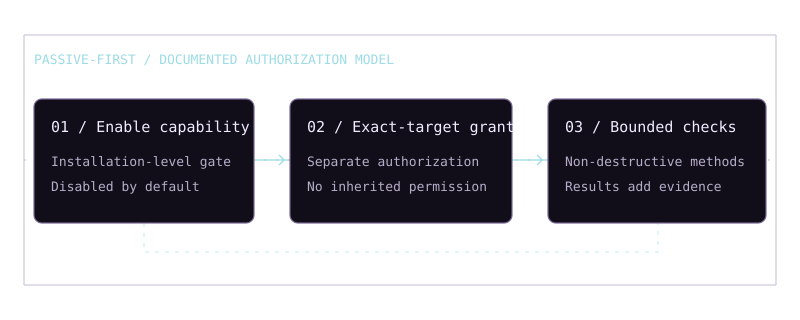

Evidence first
Retain source, collection time, collector metadata, hashes and case context rather than detaching conclusions from observations.
 George Youkhanna
George YoukhannaSoftware engineering
& security
Engineering case study / Windows edition
Local-first OSINT & security investigation. From collected observations to explainable, evidence-backed findings.
Documented v1.0Release validation pending
Stack and capabilities checked against the v1.0 Windows Guide. Source code and project runtime were not reviewed.
Explore the architecture
01 / The investigation problem
The documented workflow addresses a central investigation need: organizing collected observations, their origins and the reasoning that connects them. SPECTRE brings case context, public intelligence, evidence, correlations and reports into a local-first environment.
The application and MySQL database run on the analyst’s Windows workstation. Local-first does not mean network-free: public-source collection and authorized verification can require network access.
Retain source, collection time, collector metadata, hashes and case context rather than detaching conclusions from observations.
Keep correlations and findings tied to supporting evidence. Analysis remains distinct from what was actually collected.
Keep investigations case-scoped. A discovered hostname or address does not inherit active-assessment permission.
Intended users include analysts conducting lawful cybersecurity investigations, defensive analysis, education and explicitly authorized security validation.
Windows Guide / pp. 2, 5–7, 9
02 / Intended investigation workflow
Define the investigation and its purpose.
Record the target and confirm investigation boundaries.
Run permitted public-source collectors and review observations.
Examine provenance, timestamps, hashes and collector metadata.
Use the graph, timeline and deterministic findings to explore relationships.
Inspect supporting evidence before accepting or escalating a finding.
Require installation enablement and a separate exact-target grant.
Create an HTML/PDF report that retains evidence traceability.
Windows Guide / p. 6
03 / System architecture
The documented stack separates the browser interface, Python/FastAPI application and MySQL persistence using SQLAlchemy and Alembic. Collectors and evidence-backed investigation capabilities form the working context around those layers.
Select a component to highlight its relationships and read its responsibilities. Connected nodes use dashed outlines; the selected node uses a thicker outline.
All 8 components shown.
The documented frontend is HTML, CSS and vanilla JavaScript. It provides the analyst-facing investigation workspace; Cytoscape.js supplies the graph presentation.
Windows Guide / pp. 2–3, 5
Python and FastAPI provide the documented backend. The high-level app/ area contains routes, services, models and application logic.
Windows Guide / pp. 2–3, 8
MySQL is the documented database, with SQLAlchemy and Alembic migrations. The guide calls for a dedicated database and a least-privilege database user.
Windows Guide / pp. 2, 5, 7–8
The guide lists DNS, RDAP, Certificate Transparency, IP/ASN context and limited web metadata collection.
Windows Guide / pp. 2–4
Documented evidence records retain provenance, collection time, collector identity/version and case context. Hashing supports integrity checks.
Windows Guide / pp. 2–3, 7
The documented workspace combines evidence exploration, a timeline, deterministic correlations/findings and an interactive Cytoscape.js graph.
Windows Guide / pp. 2–3, 6–7
The guide documents deterministic HTML and PDF case exports, including evidence traceability and offline-capable branding.
Windows Guide / pp. 2–3, 7
Documented controls include role-based access, audit trails, exact-target authorization grants, cancellation and case-level active-run safety controls.
Windows Guide / pp. 3–4, 6–7
Windows Guide / pp. 2–8. Explanatory grouping; source/runtime validation remains outstanding.
04 / Implementation and intentions
The guide identifies the following as part of the completed v1.0 feature set. “Documented” means supported by that supplied guide; it does not mean independently executed or code-audited for this portfolio.
Separate investigations, scoped targets, controlled membership, role-aware sensitive actions and auditability.
Documented v1.0 / pp. 3, 9
DNS, RDAP, Certificate Transparency, IP ownership/ASN context and limited web metadata, with evidence provenance.
Documented v1.0 / pp. 3, 9
Evidence explorer, chronological timeline, deterministic correlations/findings and a Cytoscape.js graph. The guide describes Organic, Hierarchical, Radial and Grid layouts, filtering, inspection and browser-local layout persistence.
Documented v1.0 / pp. 2–3, 9
Deterministic HTML and PDF exports, offline-capable branding and a clear separation of observations, findings and verification results.
Documented v1.0 / pp. 2–3, 9
The AI interface is described as evidence-grounded and read-only. Its output is analysis, not evidence; it is not intended to execute arbitrary commands, launch collectors or bypass authorization. No AI model, provider or implemented integration is established here.
The Windows launcher’s intended startup behavior includes readiness checks and avoiding duplicate instances without administrator privileges, firewall changes or embedded secrets. The guide documents normal launcher use, but these detailed guarantees have not been independently validated.
Design wording / pp. 5–6, 8
The source provides no verified roadmap of additional planned modules. None is invented here.
05 / Security architecture
Passive investigation is the normal mode. Controlled active verification is separately gated and disabled by default in the documented shipped configuration. Enabling the capability does not authorize a target.

Documented checks include safe HTTP/HTTPS methods such as GET, HEAD and OPTIONS; presented TLS certificate inspection; bounded web-service checks on ports 80 and 443; header validation; specific safe endpoints; and a constrained manual request builder.
The Finding-to-Verify workflow distinguishes OBSERVED, VERIFIED, NOT CONFIRMED and FAILED TO VERIFY results. Those labels describe project semantics, not portfolio test outcomes.
Exploit execution, credential attacks, brute force, unrestricted scanning, destructive requests, denial of service and automated attack chaining are outside the documented feature set. SPECTRE is an investigation platform, not an exploitation framework.
Windows Guide / pp. 2–4, 6–7
06 / Validation and limitations
This case study was checked against the nine-page SPECTRE v1.0 Windows Guide supplied by the owner. Its release-status statement describes a completed feature set and Windows workflow, while requiring distribution validation before declaring a stable public release.
Reference: SPECTRE v1.0 Windows Guide / pp. 1–9. Technology: p. 2; capabilities: p. 3; active gates: p. 4; workflow/AI: p. 6; security: p. 7; structure/launcher intentions: p. 8; release boundary: p. 9.